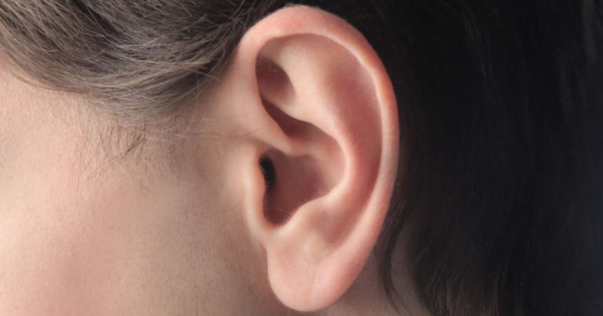

နားရွက်နီရင် ဘာတွေဖြစ်နိုင်လဲ

နားရွက်နီတာ အကြောင်းအမျိုးမျိုးကြောင့် ဖြစ်နိုင်ပေမဲ့ အများအားဖြင့်တော့ အန္တရာယ်မရှိပါဘူး။
ဘာကြောင့်ဖြစ်ရတာလဲ
၁။ နေလောင်ခြင်း
နေပူထဲကို အကာအကွယ်မပါဘဲ ထွက်တဲ့အခါ နေလောင်ဒဏ်ကြောင့် နားရွက်တွေ ရဲလာပါတယ်။ နီရဲတာအပြင် ပူတာ နာတာတွေကလည်း တစ်ပတ်လောက်ကြာတဲ့အထိ ဖြစ်နေမှာပါ။ ဒီလိုမဖြစ်အောင် နေပူထဲသွားရင် Sunscreen လိမ်းတာ ဦးထုပ်အပြားကြီးကြီးတွေ ဆောင်းတာမျိုး လုပ်ပေးနိုင်ပါတယ်။
၂။ မျက်နှာရဲခြင်း
မျက်နှာရဲလာတဲ့အခါ၊ ရှက်သွေးဖြာလာတဲ့အခါမှာလည်း နားရွက်ပါရဲလာပါတယ်။ ဒီလိုဖြစ်ရတာက စိတ်လှုပ်ရှားတဲ့အခါ အာရုံကြောကို အချက်ပြတာကြောင့် သွေးကြောတွေမှာ သွေးစီးဆင်းမှုများလာပြီး ရဲလာရတာပါ။ တခြားအကြောင်းရင်းတွေကတော့ ဟော်မုန်းတွေ၊ အစားအစာ၊ အရက်၊ ဆေးဝါး၊ လေ့ကျင့်ခန်း၊ အပူချိန်ပြောင်းလဲတာနဲ့ တချို့သော ကျန်းမာရေး အခြေအနေကြောင့်ပါ
၃။ ဘတ်တီးရီးယားပိုးဝင်ခြင်း
Cellilitis နဲ့ Erysipelas လို့ခေါ်တဲ့ အရေပြားရောဂါတွေမှာလည်း နားရွက်ရဲတာ တွေ့ရတတ်ပါတယ်။ နီရဲတာအပြင် ပူပြီး နာတာမျိုးလည်း ဖြစ်နိုင်ပါတယ်။ Erysipelas ရောဂါမှာဆိုရင် အရည်ကြည်ဖုထွက်တာ အပိန့်ထွက်တာတွေပါ တွေ့ရမှာပါ။ အရေပြားလက္ခဏာတွေအပြင် ချမ်းတုန်ဖျားတာ ပြန်ရည်ကြိတ်တွေ ကြီးတာတွေလည်း ဖြစ်နိုင်ပါတယ်။ ဒါဟာ အရေပြားမှာ တခုခုထိခိုက်ဒဏ်ရာရတဲ့အခါ ပိုးဝင်သွားတာကြောင့် ဖြစ်ပါတယ်။
၄။ Seborrhoeic Dermatitis
ဒီရောဂါဟာ လူဦးရေရဲ့ ၂-၅% ရာခိုင်နှုန်း တွေ့ရတတ်ပါတယ်။ ဖြစ်လာပြီဆိုရင် နားရွက်အတွင်းရော အပြင်မှာပါ နီရဲယားယံပြီး အဖတ်တွေ ကွာလာပါတယ်။
၅။ Relapsing Polychondritis (အရိုးနုရောင်ခြင်းတစ်မျိုး)
အရိုးတွေကို အဓိကထိခိုက်တတ်ပြီး ခုခံအားစနစ် ကမောက်ကမဖြစ်တာကြောင့် ဖြစ်ရတာပါ။ အရင်ဆုံး နားရွက်တွေနီပြီး နာလာပါမယ်။ တဖြည်းဖြည်းနဲ့ နားတစ်ခုလုံး ပျံ့သွားပြီး ရက်တွေအကြာကြီး ဖြစ်တတ်ပါတယ်။ ကြာလာရင် နားမကြားတော့တဲ့အထိ ဖြစ်သွားတတ်ပါတယ်။ ခန္ဓာကိုယ်ရဲ့ တခြားနေရာတွေထိပါ ပျံ့သွားတတ်လို့ ဆရာဝန်ပြဖို့ လိုပါတယ်။
၆။ Perichondritis
နားပတ်ပတ်လည်မှာရှိတဲ့ အရိုးနုတွေ ရောင်ရမ်းတာကို ဆိုလိုတာပါ။ ဖြစ်ရတဲ့အကြောင်းရင်းကတော့ နားဖောက်တာ၊ ထိခိုက်ဒဏ်ရာရတာ၊ အင်းဆက်ကိုက်တာနဲ့ ခွဲစိတ်ကုသမှုတွေကြောင့်ပါ။ လက္ခဏာကတော့ နားရဲ့ အရိုးနုက နီရဲရောင်ရမ်းပြီး နာလာတာပါ။ တဖြည်းဖြည်းနားတခုလုံးကို ပျံ့သွားပြီး ထိခိုက်နိုင်တာကြောင့် ဆရာဝန်ပြဖို့လိုပါတယ်။
၇။ Red Ear Syndrome
ရှားပါးရောဂါဖြစ်ပြီး နားသီးမှာ ပူပြီး နီရဲတတ်ပါတယ်။ လက္ခဏာက ခဏ ဒါမှမဟုတ် နာရီပိုင်းလောက် ကြာတတ်ပါတယ်။ ဖြစ်ရတဲ့ အကြောင်းရင်းကတော့ နားကို မကြာခဏကိုင်တာ၊ အပူအအေးဒဏ်ကို မခံနိုင်တာတွေကြောင့်ပဲဖြစ်ပါတယ်။ ဒီရောဂါကြောင့် ခေါင်းတခြမ်းကိုက်တာ (Migraine)နဲ့ တခြားရောဂါတွေ ဖြစ်လာနိုင်ပါတယ်။
ကုသနည်းများ
ဖြစ်ရတဲ့ အကြောင်းရင်းပေါ်မူတည်ပါတယ်။
နေလောင်တာကြောင့်ဆိုရင်
နေလောင်တာကိုတော့ အိမ်မှာတင် ကုလို့ရပါတယ်။ နေပူမခံတာ၊ နားရွက်အေးအောင်ထားတာ၊ ရှားစောင်းလက်ပတ်လိမ်းတာ၊ Hydrocortisone လိမ်းတာတွေ လုပ်ပေးနိုင်ပါတယ်။ ဒါပေမJh ရက်တော်တော်ကြာတဲ့ အထိမပျောက်ဘူးဆိုရင်၊ ပိုဆိုးလာရင်၊ နေလောင်တာနဲ့ မဆိုင်ဘဲ တခြားလက္ခဏာတွေ ပေါ်လာရင်တော့ ဆရာဝန်နဲ့ ပြသရပါမယ်။
မျက်နှာရဲတာကြောင့်ဆိုရင်
ပုံမှန်တော့ ကုစရာမလိုပေမဲ့ ရောဂါတစ်ခုခုကြောင့်လို့ ယူဆရင် ကုသမှုခံယူဖို့ ဆရာဝန်နဲ့ ဆွေးနွေးနိုင်ပါတယ်။
Cellilitis နဲ့ Erysipelas ကြောင့်ဆိုရင်
ဆရာဝန်နဲ့ပြပြီး စစ်ဆေးကြည့်လိုက်တာနဲ့ အလွယ်တကူ သိနိုင်ပါတယ်။ ပဋိဇီဝဆေးတွေသောက်ပြီး ၁ပတ်လောက်နေရင်တော့ ကောင်းသွားနိုင်ပါတယ်။ ဒီအတောတွင်းမှာ အနာသက်သာအောင် ရေခဲကပ်ပေးနိုင်ပါတယ်။
Seborrhoeic Dermatitis ကြောင့်ဆိုရင်
ဒီရောဂါကို အမြစ်ပြတ်အောင် ကုလို့မရပေမယ့် လိမ်းဆေးတွေနဲ့ သက်သာအောင် လုပ်လို့ရပါတယ်။ နားအတွင်းမှာဆိုရင်တော့ အစက်ချဆေးတွေ သုံးလို့ရပါတယ်။
Relapsing Polychondritis ကြောင့်ဆိုရင်
စတီးရွိုက်တွေ အကိုက်အခဲပျောက်ဆေးတွေပေးပြီး ကုလို့ရပါတယ်။ ဒီ့ထက်အဆင့်မြင့်တဲ့ နည်းလမ်းတွေဖြစ်တဲ့ ခုခံအားစနစ်ကို အဓိကထားပြီး ကုတာ၊ ခွဲစိတ်ကုသတာမျိုးတွေလည်း လုပ်လို့ရပါတယ်။
Perichondritis ကြောင့်ဆိုရင်
ပဋိဇီဝဆေးတွေပေးပြီး ကုလို့ရပါတယ်။ နားထဲမှာ ပြည်တည်တဲ့အထိဖြစ်လာပြီဆိုရင်တော့ ပြည်ကို ထုတ်ပစ်ရမှာပါ။ နားဖောက်ရာက ဖြစ်လာတယ်ဆိုရင်တော့ နားကပ်ဝတ်တာကို နားထားရမှာပါ။
Red Ear Syndrome
ဒီရောဂါအတွင် တိကျတဲ့ ကုသနည်း မရှိသေးပါဘူး။ ဒါပေမဲ့ အနာသက်သာအောင် အကိုက်အခဲ ပျောက်ဆေးတွေ ရေခဲကပ်တာတွေ လုပ်ပေးလို့ရပါတယ်။
Source-ဒေါက်တာ ထက်ထက်ဇော်ဝင်း